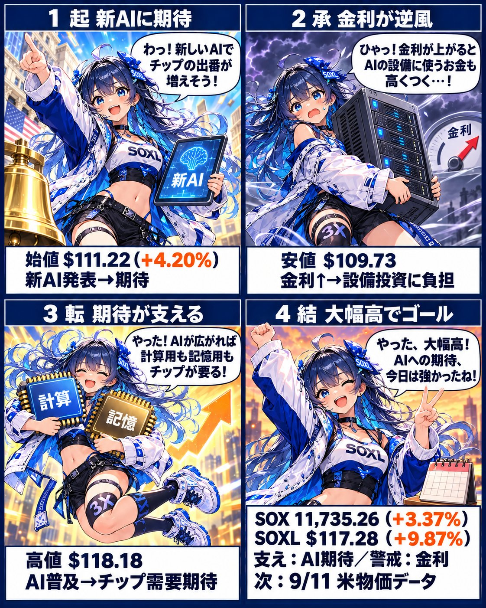
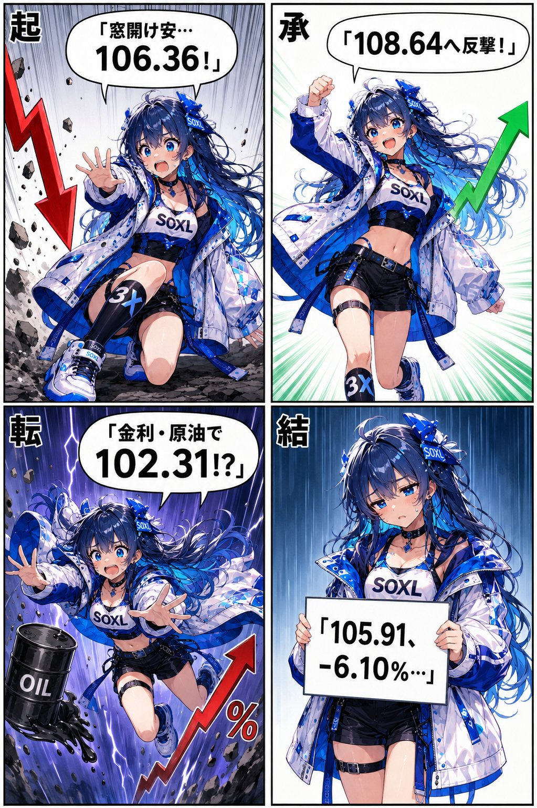
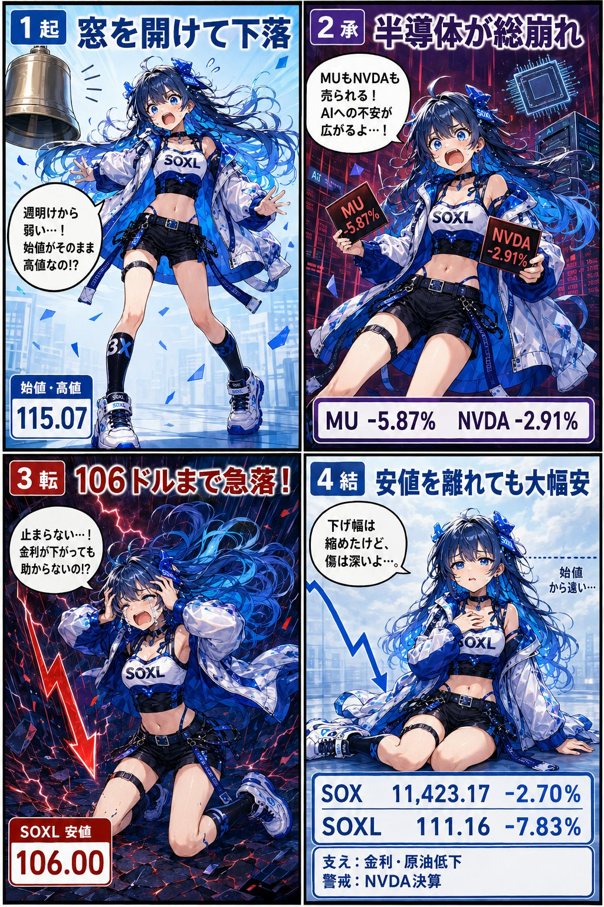

{kind=link}
{kind=link}
{kind=link}
母親がChatGPTやドンキの配膳ロボットを見て
「AIはこれ以上進化するの？もうこれ以上はしないんじゃないの？」
と言った。進化します。
現時点の視点だから特別に見えるのかもしれないけど、過去、現在、未来の中で「今」なんてただの中継地点です。
終点ではありません。
インデックス指数が今上限と言っているようなものです。

拡大して読む9月5日
AIへの期待が、逆風を超える。
期待と金利に揺れた一日。
上がって喜び、下がって絶叫。
半導体相場の一日を、SOXLちゃんと振り返ります。
これまでの作品から、3本をピックアップ。最新作は毎朝Xで。

拡大して読む期待と金利に揺れた一日。

拡大して読む上にも下にも、情緒が忙しい。

拡大して読む下げ幅が縮んでも、傷は深い。
SOXLちゃんは、SOXLをモチーフにした漫画のキャラクター。
新しい漫画は、毎朝Xで発信しています。
投資の仕組みも、日常の何気ない行動も。
「当たり前」を、一度立ち止まって考える。
終点ではありません。
母親がChatGPTやドンキの配膳ロボットを見て
「AIはこれ以上進化するの？もうこれ以上はしないんじゃないの？」
と言った。進化します。
現時点の視点だから特別に見えるのかもしれないけど、過去、現在、未来の中で「今」なんてただの中継地点です。
終点ではありません。
インデックス指数が今上限と言っているようなものです。
ラッセル2000指数って
そもそもインデックスの利点である
「弱い企業を排除して強い企業に入れ替わる仕組み」に対して
「強い企業すら追い出してる」ので意味が薄い。わざわざ積み立てるメリットは思いつきません。
$IWM
新陳代謝が激しい動物ほど小さく寿命を使い切る。短い。
しかしインデックス指数は新陳代謝を十分にしつつ長寿。寧ろ終わりは見えない。
全く異なる概念同士だけど、おもしろいと思った。
緊急地震速報が鳴るのは怖いですが、
鳴ったと投稿するのは今回の地震で、「震度4以上の地域に居る」
と宣言していることと同じです。
（正確には震度5以上が予想される地震で4以上が予想される地域）
都道府県までは公開されていない場合、
ご注意された方がいいかもしれません。
ルエン Luen-TR
「ルエン」と呼んでください。
投資と「常識を疑う」をテーマに発信しています。
23歳のときに、資産8桁を突破しました。
半導体は
文明の発展に必須。
投稿が極端なのは、演出ではなく素です。
幼い頃から、
といったことを考えていました。
2026年8月の記録。現在の発信テーマは「投資」「常識を疑う」です。